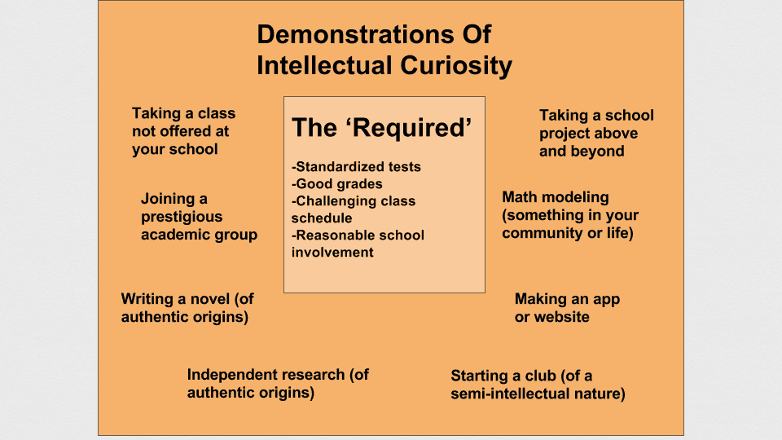

Intellectual curiosity is the one trait that is absolutely crucial to show through your application and is the trait that admission officers value the most.
Intellectual curiosity is the desire to learn because there is a genuine interest or passion there. An intellectually curious person is one who is constantly learning new things in their free time simply because it fascinates them.
"I have no special talent. I am only passionately curious."
-Albert Einstein
Why Do Colleges Value This Trait So Much?
The truly successful people are not those who study and get the grades for the sake of college or to impress others or for any other external reason. Those with a genuine passion for learning will always surpass those without. This is intuitive logic but the real question is: how do colleges ascertain whether a student is intellectually curious or simply going through the motions?
There are certain things in a student’s application that help strengthen their case for being ‘intellectually curious.’ Taking a summer class or class not necessary for high school is one example. Doing independent research on a subject that fascinates them is another. There are multiples way to show this trait which I can further expand upon if need be, but the important thing here is that it is genuine. For example, doing research on how the mitochondrial DNA of rats is affected throughout each generation is cool and all- but is that really a genuine intellectual curiosity?
Showing intellectual curiosity requires going above the required and the 'normal':

I’ll use an example of what I did over the summer to show independent research of a more authentic origin. The area I live in- Horsham, PA,- had some turmoil following a lowering in the acceptable limits of a certain chemical in the water supply by the EPA. With the new limits the Horsham water supply was found to be in excess of this chemical based on some long term pollution done primarily by the Naval Base in the area. Thus I made it a research goal to learn about this and eventually helped find the point of use filter that best filtered this chemical as traditional filters are surprisingly ineffective.
I only talk about this to show an example of how something can have a more genuine origin of- ‘wow I actually want to learn about this’ rather than ‘let’s pad my application.’ The key is to be motivated by the former and show that accurately through your presentation of what you did. This is something I can personally help with through the ‘Personal Guidance’ section of this website.
The Importance of Intellectual Curiosity
I really can’t stress the importance of showing this trait through your application enough. As the admission officer reads your application determining your level of intellectual curiosity is one of the biggest things they do (and is, of course, a very subjective process). It is crucial to keep strengthening your case for having intellectual curiosity in a genuine and cohesive manner.
Here I will give you a tidbit of the upcoming ‘College Essay’ section because it is so relevant. I’m sure a lot of you have seen the “this college essay got this girl into 5 Ivies and Stanford” essay. If you haven’t, the essay is a recounting of a story of her as a child running through Costco and being curious about things. Why is this considered such a ‘good’ essay? Sure it is fairly well written and semi entertaining but far more importantly it shows a genuine intellectual curiosity. Through this essay she argues that intellectual curiosity is not just a trait she possesses but is a fundamental, core, defining trait for her that was established at a very young age.
Do you have to use your essay to show your intellectual curiosity? Absolutely not- you can show it throughout the application or in other ways. But it certainly makes for a good essay if delivered correctly and genuinely.
Admission officers are human. If they don’t like you they will not accept you. Showing a hint of meanness or, really, not showing any kindness can really kill your chances. Colleges don’t want the smartest kids; they want the smartest, kindest, most intellectually curious kids. That group of kids will do better together than the smartest kids would.
This is why having community service and things that demonstrate a genuine caring for others is so important. Just racking up community service hours, though, is not the best way to go about it. Just like with demonstrating intellectual curiosity- it is important that your kindness is displayed through a genuine and authentic origin.
Initiating your own community service event, volunteering at a children’s hospital, and starting a club to help others are all extreme examples of showing kindness. This can be strong if kindness is a defining trait for you, but if it isn’t (and that’s okay) you won’t want to do or won’t have done these types of things.
Still, it is absolutely crucial to show at least an element of kindness even if it is not your strongest trait.
Colleges have too many kind, smart applicants to accept any unkind ones.
While stressing the importance of establishing yourself as likeable in the ‘kindness’ section, it seems only fitting that I talk about my take on leadership positions next.
This is one of my more opinion-based ideas.
‘Leadership’ is primarily used for admission officers to see if you are well-liked or at least respected among your peers. Most high school clubs are primarily run by the advisors (teachers) and colleges are aware of this. Being in a leadership position, though, shows that you were brave enough to go for it and can show that you are respected amongst your peers.

Having election-based leadership positions is often more valuable; leadership is a great indicator for admission officers of your likeability and how respected you are among peers.
This is why positions like Student Body President or Student Council President are more valuable- colleges know that most of the students in your school respected and liked you enough to vote for you.
Being well-respected is, after all, the first step to becoming a leader.
Citations and Disclaimers
This is my view of the college application process. I do not know everything nor do I claim to be right 100% of the time. I simply wish to help people by supplying my analysis of the process but it should be taken in conjunction with people in your life like guidance counselors, teachers, etc. I assume no responsibility for getting you into any particular school. I will simply advise and facilitate your application to the best of my ability.
We are a participant in the Amazon Services LLC Associates Program, an affiliate advertising program designed to provide a means for us to earn fees by linking to Amazon.com and affiliated sites.